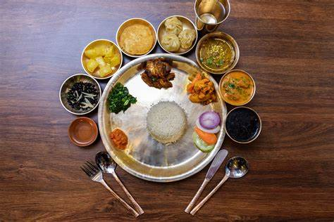
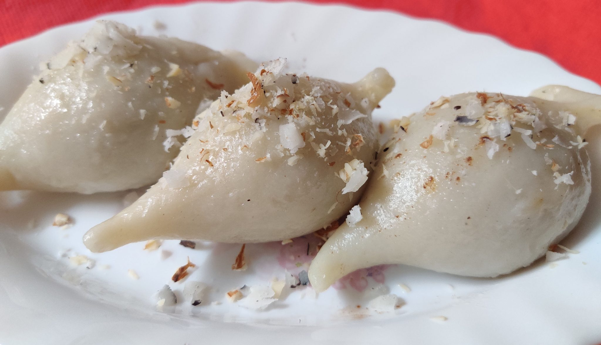
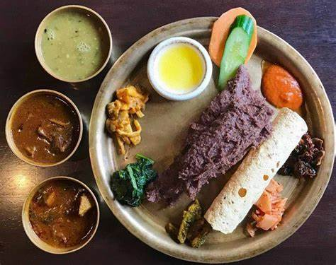
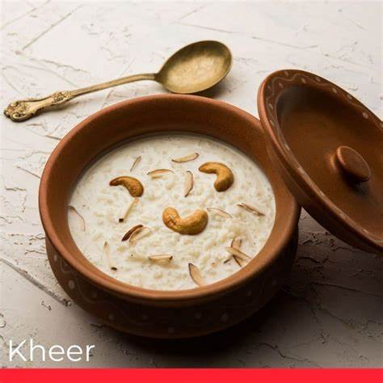

Movies & Anime
I love to watching movies and anime series in my free time. Here are some of my favorites:

Titanic
1997 ‧ Romance/Drama
The Endgame
2019 ‧ Action/Sci-fi
The shawnshank redemption
1994 ‧ Drama/Crime

Your Name
2017 ‧ Anime/Romance

Naruto
2007 ‧ Anime/Fantasy

Grave of fire flies
1988 ‧ Anime/Emotional
My Watchlist
| Title | Type | Genre | Rating |
|---|---|---|---|
| Inception | Movie | Sci-Fi/Thriller | ★★★★☆ |
| Demon Slayer | Anime | Action/Fantasy | ★★★★★ |
| The Dark Knight | Movie | Action/Crime | ★★★★★ |
| Death Note | Anime | Thriller/Psychological | ★★★★★ |
Reading Books
I enjoy reading both fiction and non-fiction. Here are some books I've recently read. Among these book my favourite book is Rich dad and Poor dad by Robert Kiyosaki.

Atomic Habits

The Alchemist
Harry Potter

The power of subconcious mind.

The Psychology of Money.

To kill a Mokingbird.

The Lord of Rings.

Rich dad Poor dad.
My Reading List
- The Art of War
- To subtle Art of not giving a fuck
- Think and Grow Rich
- 48 power of Laws
- The Silent Patient
- Sapiens
Cooking Nepali Cuisine
I love cooking traditional Nepali dishes, especially momo (dumplings) these are my favourite.I also have shared recipie for chicken MO:MO. I do have good experience on cooking. I started cooking when I was 12. I used to help my mom in kitchen. I learned cooking from my mom. I enjoy her cooking a lot.

Nepali Momo
Thukpa

Dal Bhat

Sel Roti

Yomari

Dhido

Dahi Chura

Kheer
Chicken Momo Recipe
Ingredients:
- 500g ground chicken
- 2 cups finely chopped cabbage
- 1 onion, finely chopped
- 2 tbsp garlic paste
- 1 tbsp ginger paste
- 1 tsp turmeric
- 1 tsp cumin powder
- Momo wrappers
Instructions:
- Mix all ingredients except wrappers
- Place spoonful in center of wrapper
- Fold and pleat edges to seal
- Steam for 10-12 minutes
- Serve with tomato achar
Other Nepali Dishes I Enjoy Making
- Newari Khaja Set
- Gundruk Soup
- Yomari
- Chatamari
- Bara
- Choila